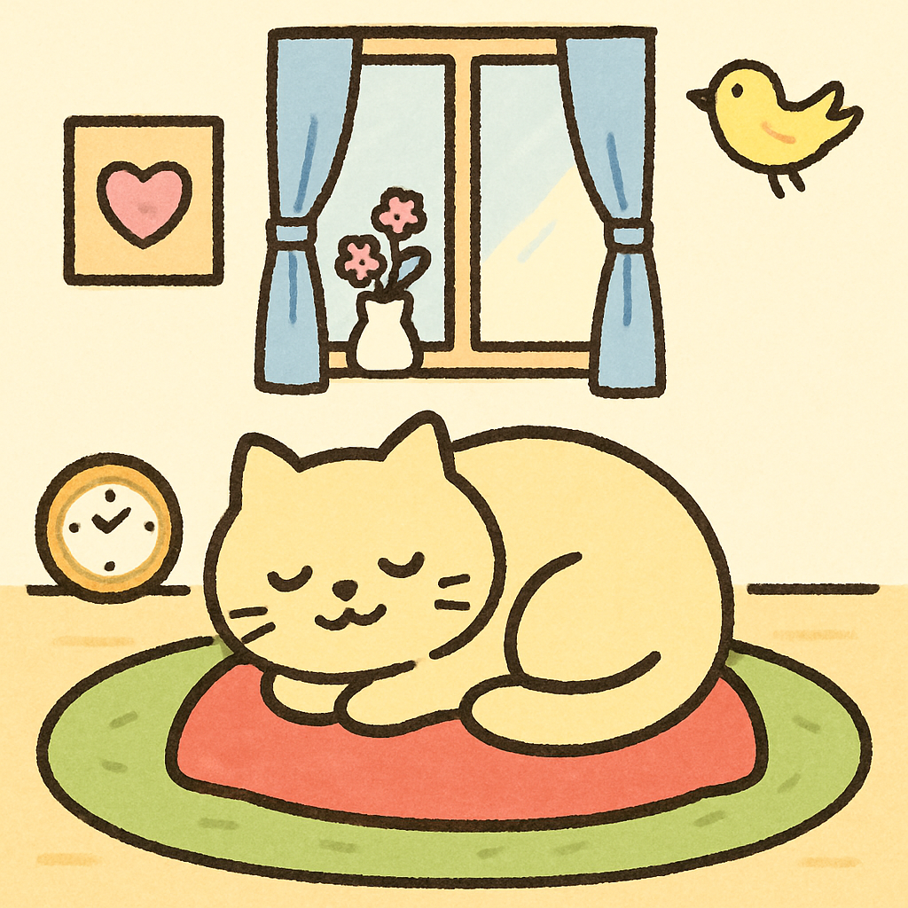
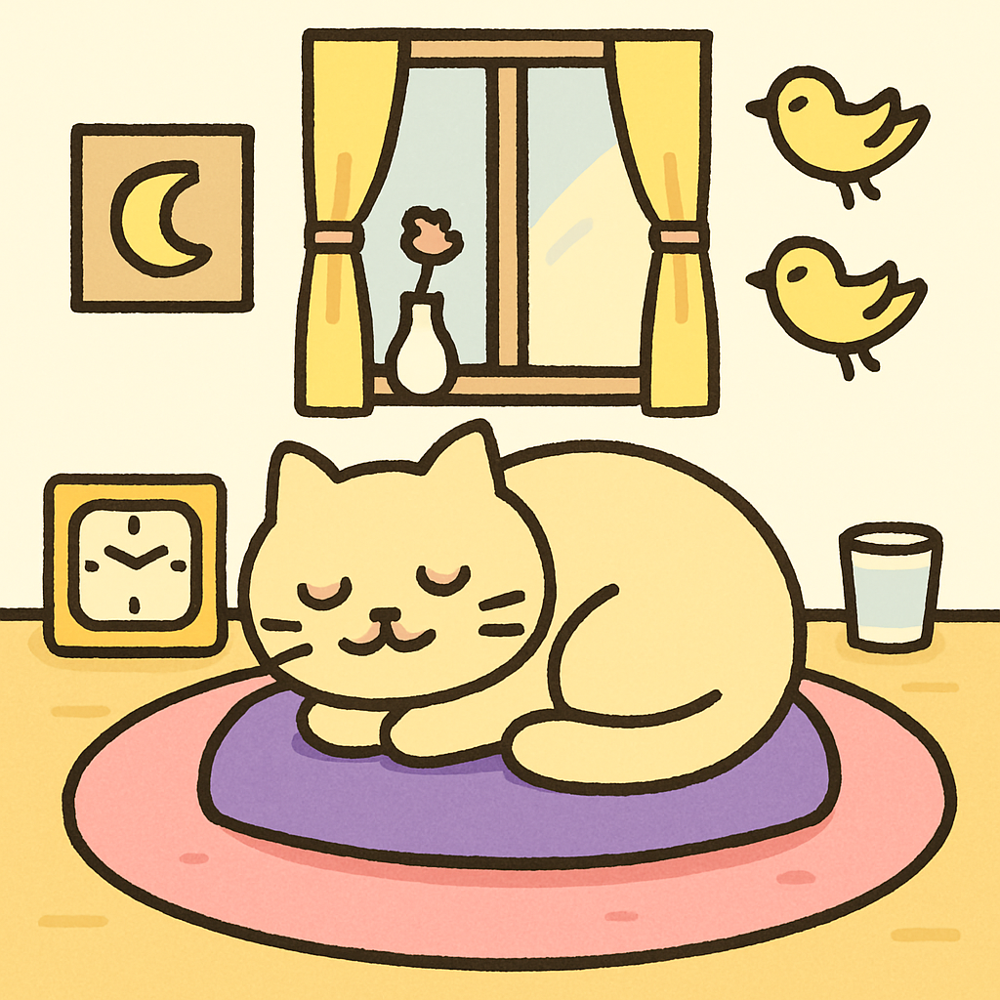
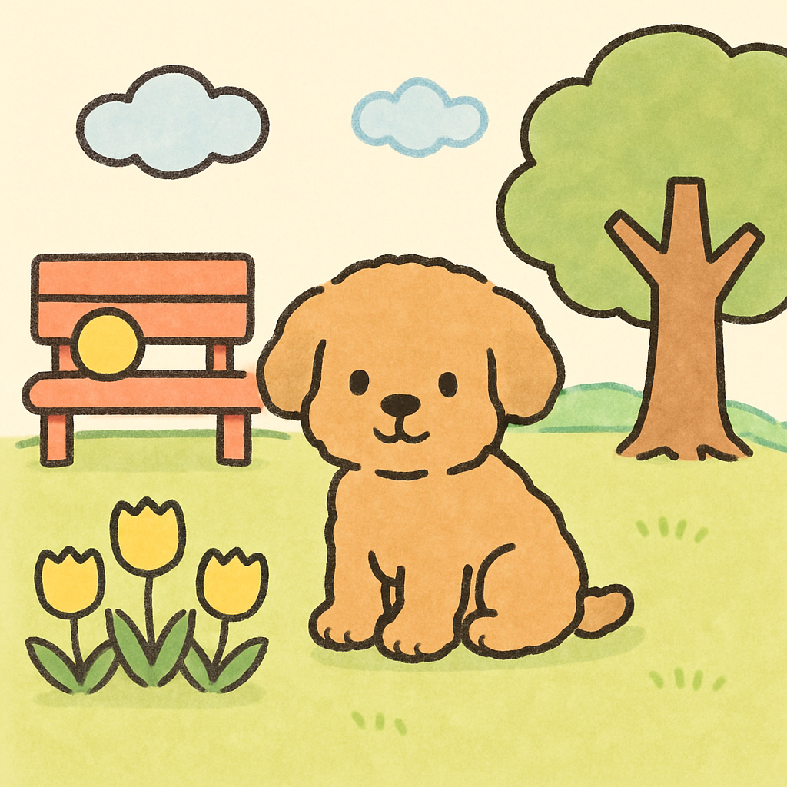
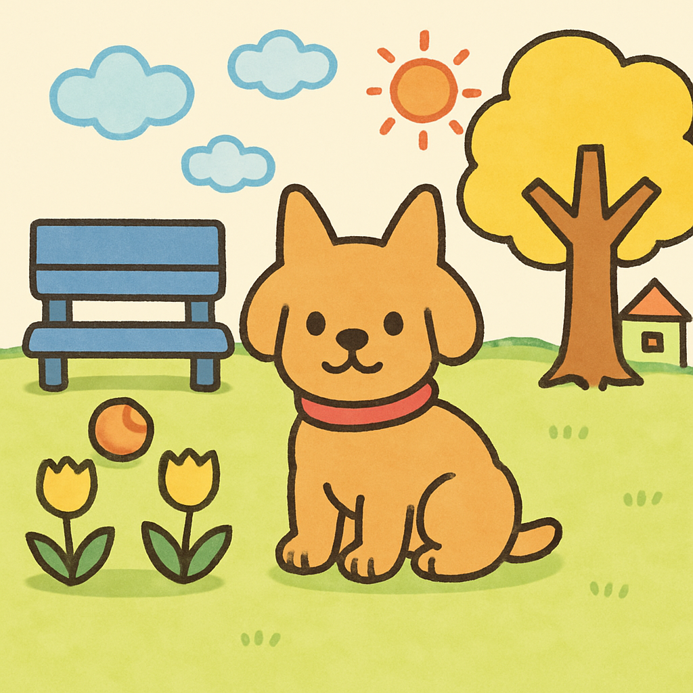
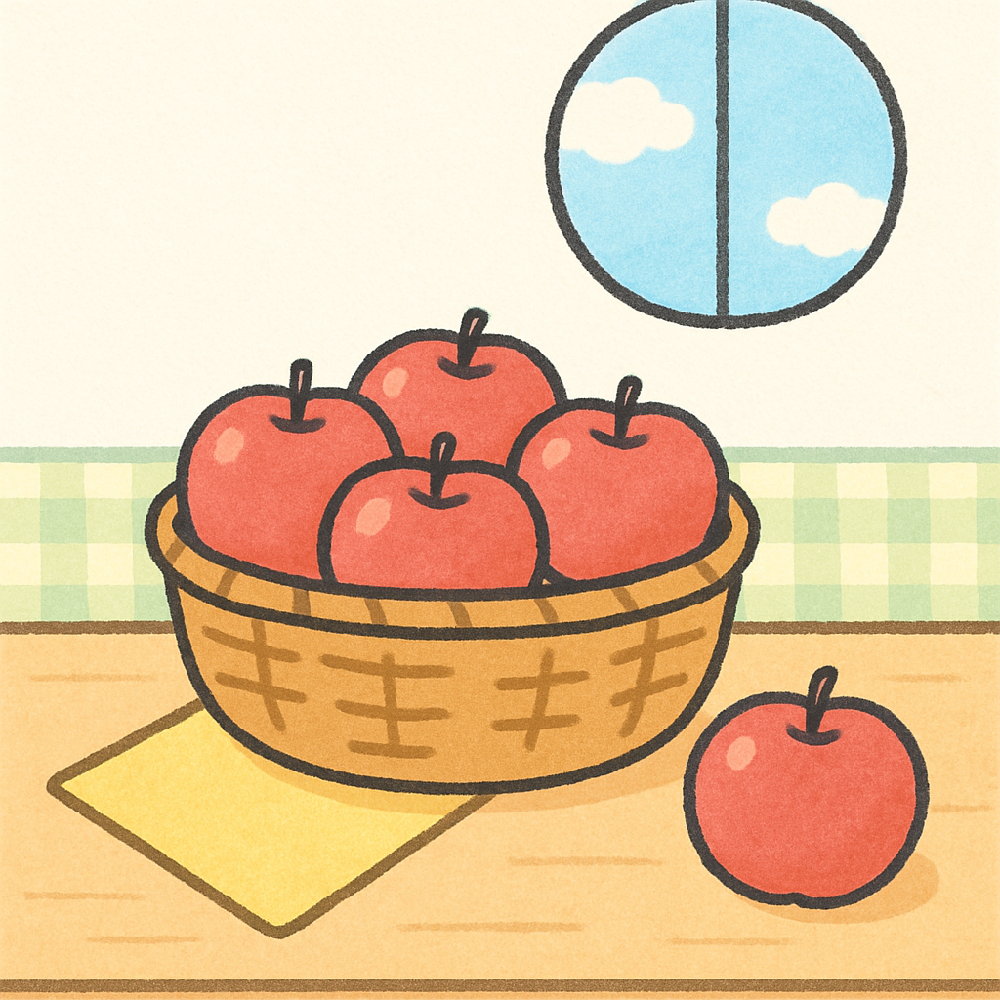
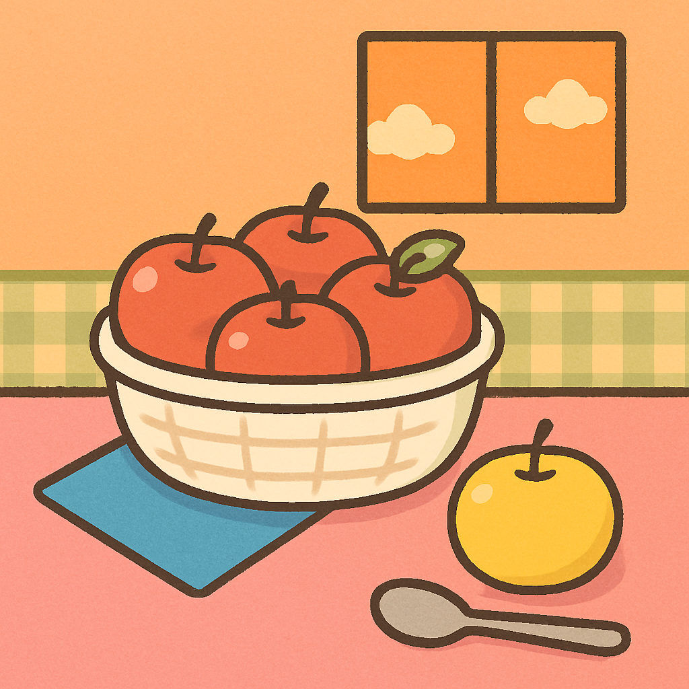
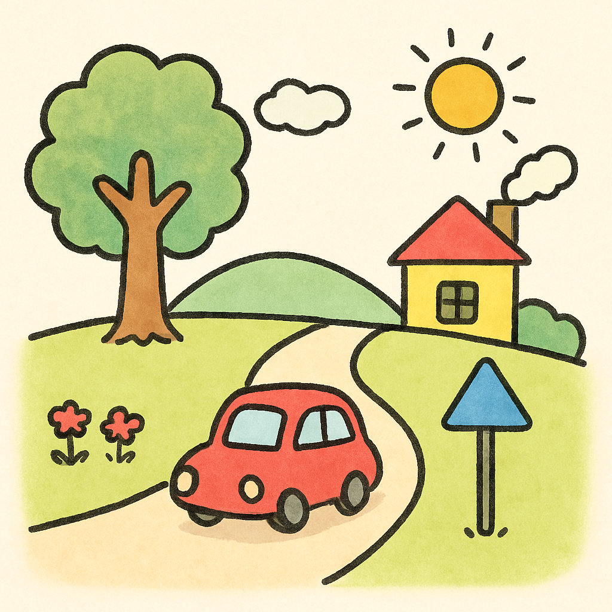
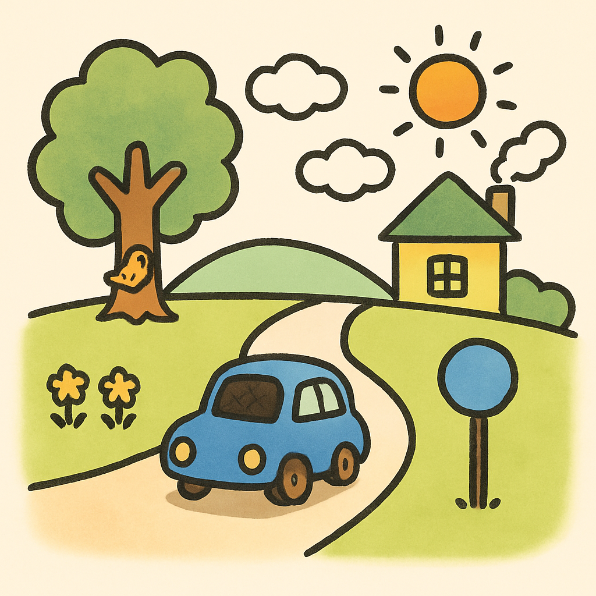
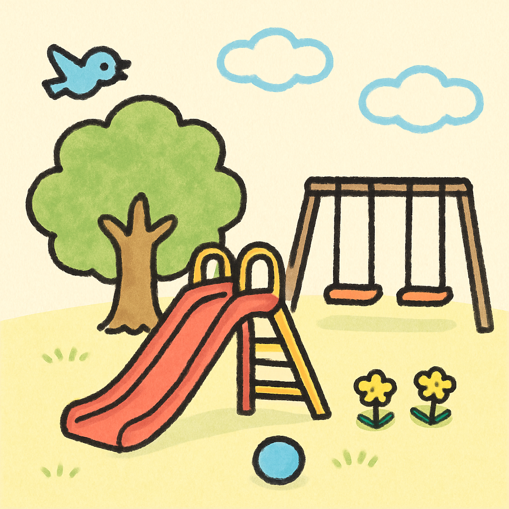
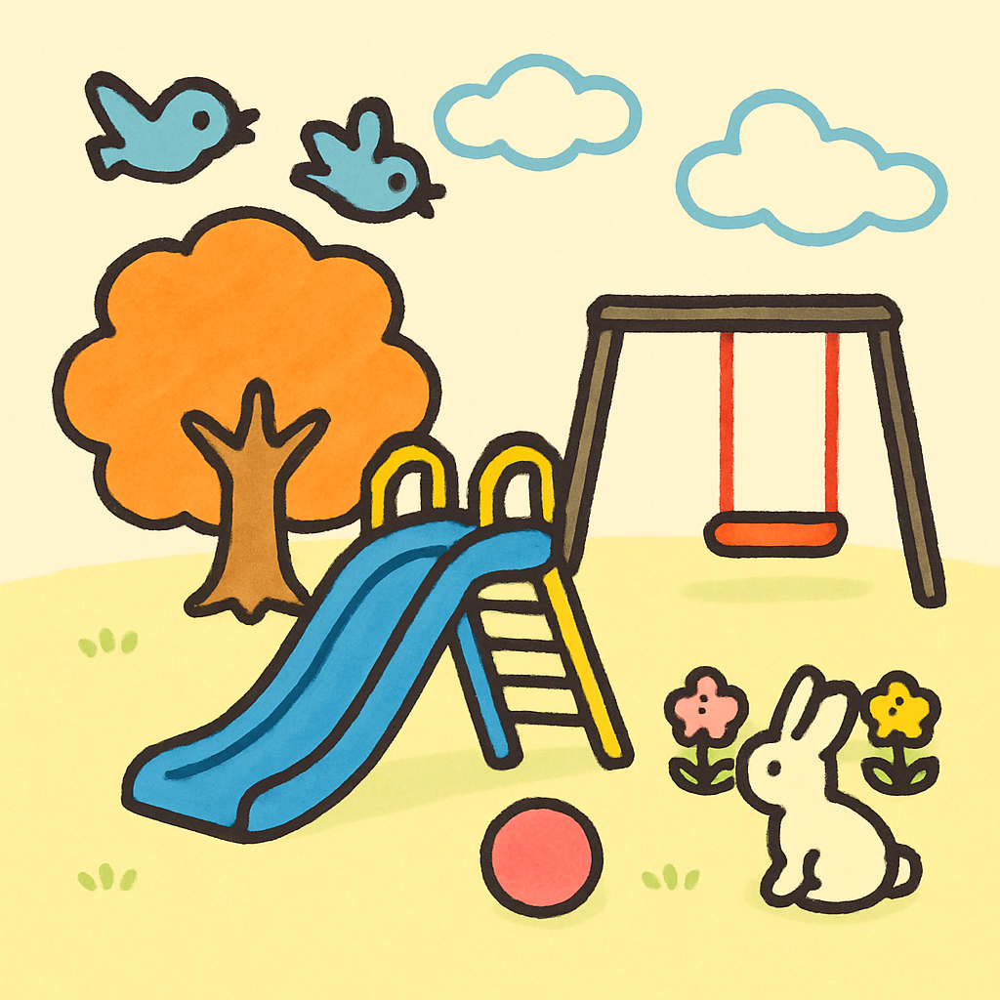

もんだい 1: ねこ (りびんぐ)

ひだり (もと)

みぎ (まちがいあり)
指示した10個の差分
- ねこの首輪を外す
- カーテンの色を青から黄色に変える
- クッションの色を赤からむらさきに変える
- 花瓶の花を3本から1本に減らす
- 壁のハートの絵を月の絵に変える
- ラグの色を緑からピンクに変える
- 時計を四角い時計に変える
- 小鳥を1羽から2羽に増やす
- ねこのしっぽの向きを反対側にする
- 窓の右下にコップを1つ追加
もんだい 2: いぬ (こうえん)

ひだり (もと)

みぎ (まちがいあり)
指示した10個の差分
- 犬の首輪を青から赤に変える
- 木の葉を緑から黄色に変える
- ベンチを赤から青に変える
- ボールを黄色からオレンジに変える
- 雲を2つから3つに増やす
- チューリップを3本から2本に減らす
- 犬の耳を立たせる
- 丘の右側に小さな家を1軒追加
- 空にお日さまを1つ追加
- ボールの位置をベンチの下に移動
もんだい 3: りんご (かご)

ひだり (もと)

みぎ (まちがいあり)
指示した10個の差分
- かごの中のりんごを5個から4個に減らす
- 転がっているりんごの色を赤から黄色に変える
- テーブルクロスの色をピンクに変える
- 窓の形を四角に変える
- 雲を1つから2つに増やす
- ナプキンの色を黄色から青に変える
- かごの色を茶色から白に変える
- りんごの葉を1枚追加
- テーブルの右下にスプーンを1本追加
- 空のグラデーションを夕方の色（オレンジ）に変える
もんだい 4: くるま (どうろ)

ひだり (もと)

みぎ (まちがいあり)
指示した10個の差分
- 車の色を赤から青に変える
- 車のタイヤの色を黒からオレンジに変える
- 家の屋根の色を赤から緑に変える
- 煙突の煙の数を増やす
- お日さまの色を黄色からオレンジに変える
- 雲を2つから3つに増やす
- 道路標識の形を三角から丸に変える
- 左脇の赤い花を黄色に変える
- 木の幹に小さな鳥を1羽追加
- 車のフロント窓を黒く変える
もんだい 5: すべりだい (こうえん)

ひだり (もと)

みぎ (まちがいあり)
指示した10個の差分
- すべり台の色を赤から青に変える
- ブランコを2台から1台に減らす
- 木の葉を緑からオレンジに変える
- 雲を2つから3つに増やす
- 黄色い花をピンクと黄色に変える
- ボールの色を水色からピンクに変える
- 飛んでいる鳥を1羽から2羽に増やす
- すべり台のはしごの段数を増やす
- ブランコのチェーンの色を黒から赤に変える
- 地面に小さなウサギを1匹追加